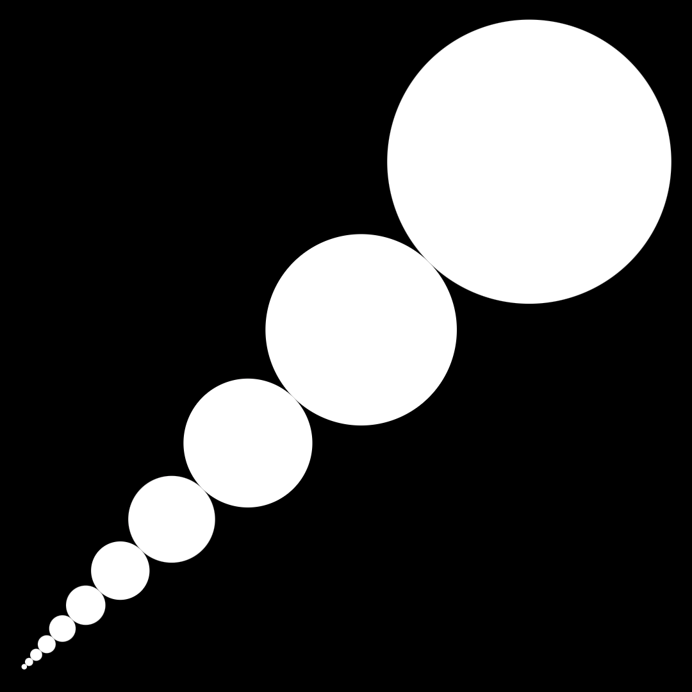
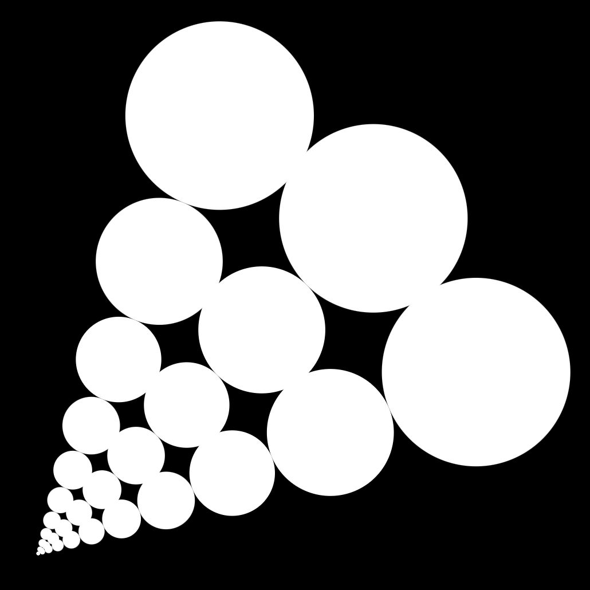
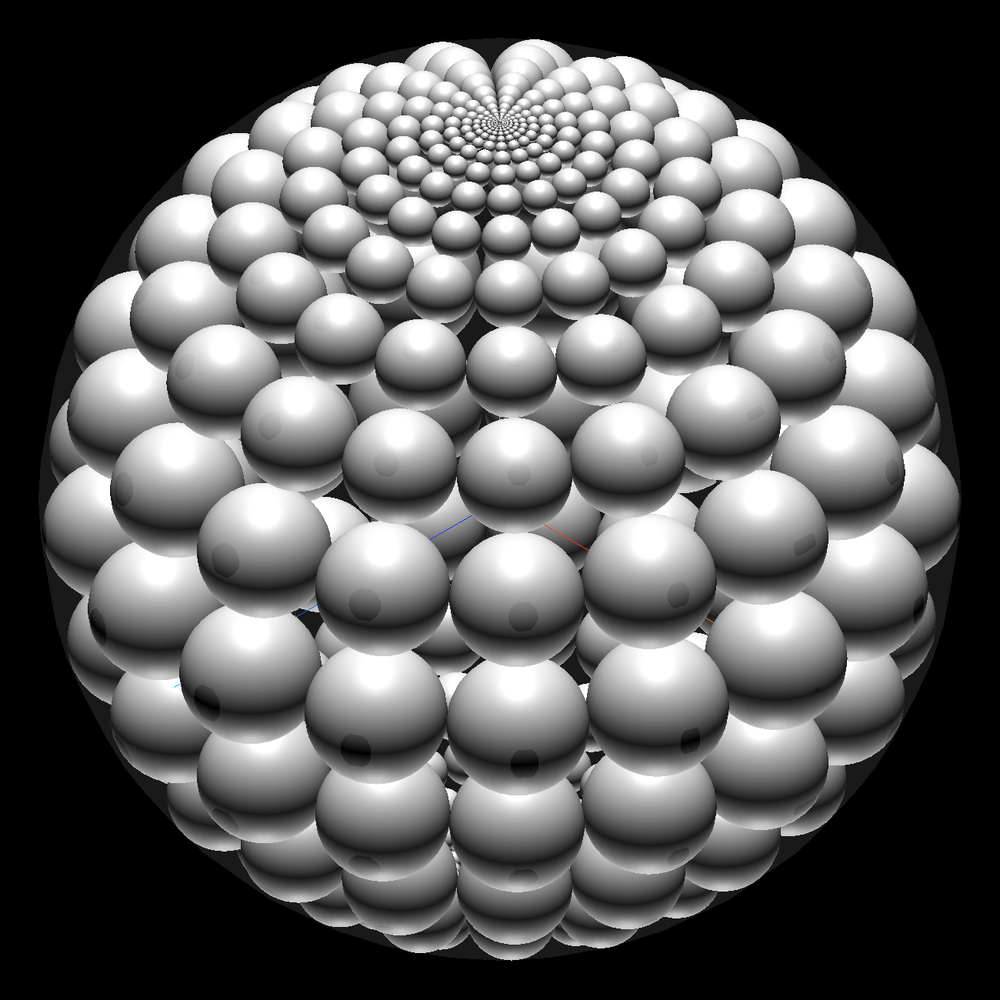

Circles in sectors
Introduction
I draw vector graphics circles inscribed in a sector.
Implementing those in self executing SVGs is surprisingly straight forward.
Sector
A sector is a set of circles inscribed between two lines. If \(R\) is the radius of the confining circle and \(\theta\) is half the angle between the two lines, the radii of of the first ring of circles is determined by: $$r_{0} = R({\sin{\theta} \over 1+\sin{\theta}})$$ And the radii of inner rings circles can be calculated by: $$r_{n+1} = r_{n}({1+\sin{\theta} \over 1-\sin{\theta}})$$
For instance when \(\theta = {\pi \over 16}\), our sector will look as follows:
Sectors
We can draw multiple sectors.
Grid
If the angle is a fraction of pi, we can create a grid.
If we choose to have \(N\) sectors, our angle would be \(\theta = {\pi \over N}\).
In the case below, \(N=8\) and \(\theta = {\pi \over 8}\).

Resolution
If we decrease the angle of drawing we will have smaller circles and finer sectors, doing so increases the resolution of our grid.

Alpha
We can set the alpha channel of each circle's fill color according to their distance from the center.

Color
We can also set the each circle's fill color according to their distance from the center.

Animation
We can now use SVG SMIL animations to make circles animate on a path.

Flower
Tweaking the parameters of this technique allows the generation of some interesting patterns:

Spirals
Choosing which sectors to draw allows you to create other patterns:

Orbits
And adding another radius to the animation generates interesting orbits:

Ellipse
Different parameters create different patterns:

YY
And overlaying them over each other can create familiar patterns:

Bubbles
Changing the animation parameters leads to some fun outcomes:

Phoenix
We can also create asymmetrical animation:

Shell
And generally have fun with the results:

Spheres
Or go 3D:
Interesting discovery:
While I was coding this, I started noticing the total area of the inner circles is converging.
This makes sense, since the area of the circles is limited by the number of sectors and is getting smaller at each ring.
What is the total area of all the circles in a single sector?
Like in high school we will start with the unit circle as the outer perimeter, with \(r_0\) being the radius of the first ring of circles, \(r_1\) being the radius of the second ring of circles, and so on. Since the unit circle has a radius of 1, we can immediately deduce the following: $$r_{0} = ({\sin{\theta} \over 1+\sin{\theta}})$$ and we already know that: $$r_{n+1} = r_{n} ({1-\sin{\theta} \over 1+\sin{\theta}})$$ that means that: $$r_{1} = {(\sin{\theta})({1-\sin{\theta})} \over (1+\sin{\theta})^2}$$ and: $$r_{2} = {(\sin{\theta})({1-\sin{\theta})^2} \over (1+\sin{\theta})^3}$$ so generally we can say that: $$r_{n} = {(\sin{\theta})({1-\sin{\theta})^n} \over (1+\sin{\theta})^{n+1}}$$ so if the area of a single circle in a sector is: $$A_{n} = \pi r_{n}^2 = \pi ({(\sin{\theta})({1-\sin{\theta})^n} \over (1+\sin{\theta})^{n+1}})^2$$ the area of a single sector of circles will be: $$A_{b} = \pi \sum_{n=0}^{\infty} ({(\sin{\theta})({1-\sin{\theta})^n} \over (1+\sin{\theta})^{n+1}})^2 $$ and since we're dealing with two or more sectors, we know that: $$ 0 < \theta < {\pi \over 2} $$ it means the sum of areas of all the circles inscribed in a sector converges to: $$A_{b} = \pi \sum_{n=0}^{\infty} ({(\sin{\theta})({1-\sin{\theta})^n} \over (1+\sin{\theta})^{n+1}})^2 = {\pi \sin{\theta} \over 4}$$What is the total area of all the circles in all the sectors?
Assuming we have \(k\) sectors, then \(\theta = {\pi \over k}\) and our sum would be: $$A_{k} = {k A_{b}} = {\pi k \sin{\pi \over k} \over 4}$$ and if we take the limit of \(k\), we will get: $$\lim_{k \to \infty} {\pi k \sin{\pi \over k} \over 4} = {\pi^2 \over 4} \tag*{$\blacksquare$}$$Another approach:
I am not sure if all these steps were mathematically valid, and I asked, so Yves Daoust suggested that the ratio between the area of the circles in each annulus and the area of the annulus should have the same ratio as the the area of all circles and the unit circle.In that case we determine that: $$ \textrm{Area of annulus} = {π (1 - (1 - 2 r)^2)}$$ and: $$ \textrm{Area of circles} = k \pi r^2 $$ then we get a ratio of: $$ kr \over {4(1-r)} $$ and we know that: $$ r = {\sin({\theta \over 2}) \over (1 + \sin({\theta \over 2}))} $$ so the ratio is: $$ {{1 \over 4} k {\sin({\pi \over k})}} $$ and so $$ \lim_{k \to \infty} {{1 \over 4} k {\sin({\pi \over k})}} = {π \over 4} \tag*{$\blacksquare$}$$ I find it quite beautiful that no matter how small the circles are, they can never cover more than \(\pi \over 4 \) of the outer circle.